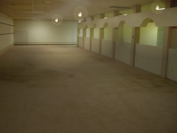
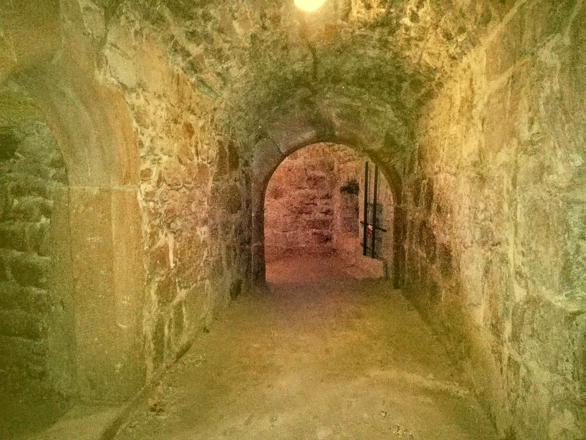
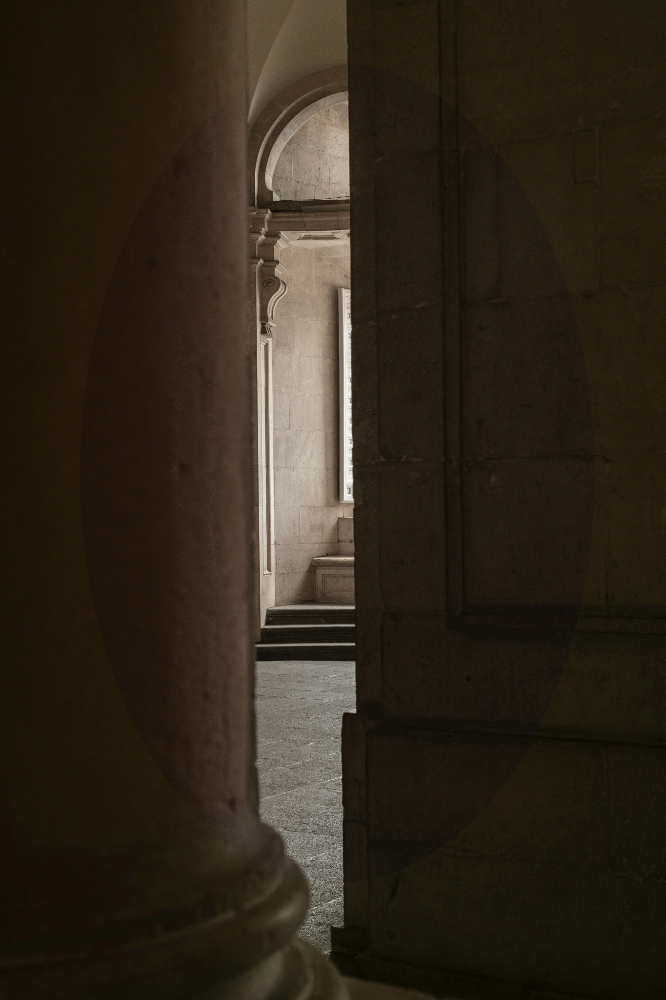

<数据已恢复>
<M.E.G. 通知：以下信息在另行通知前，被列为保密内容>
<M.E.G. 通知 #2：后续将进行一致性编辑>
我发现自己陷入了一个相当棘手的境地。我似乎离开了物质世界，进入了一个介于我所认知的现实世界与地狱之间的某种夹层空间。我感觉自己像在这里待了数年，即便我知道那不是真的。虽是如此，我想我还是开始写日志为好。既是为了整理我自己的思绪，也是为了丰富读到这些文字之人的见闻——无论你是谁。
据我所知，这一切都始于三周前。那是寻常的一天；就是你本以为只需要去上班、处理日常事务的那种日子。我刚到，正准备开始上午的工作。午后大约两小时左右，我起身去活动活动腿脚。当时，我对那部新安装的升降梯（或者叫电梯，如果你想准确点的话）非常好奇。
于是，我和其他几个人一起上了电梯，跃跃欲试地想要体验一番。下行过程还算平稳。至少，在电梯快要到底部时是这样——那时它突然开始剧烈摇晃，把我和电梯里其他所有人都震倒在地，而那些人，我后来再也没有见过。地上铺着潮湿的黄色地毯？当然，电梯里原本并没有铺地毯，所以我当即惊慌起来。我睁开眼，抬头看去，映入眼帘的是……
……这个鬼地方除了第一条走廊之外的所有景象。走过最初十几条走廊后，我才意识到，前方看不到尽头，也没有任何可以停下休息的地方，什么都没有，只有无尽的黄色走廊和昏暗的灯泡，来安抚我的歇斯底里。
绵延数英里的潮湿黄色走廊。纵横交错的通道，突如其来的死胡同和更加意想不到的拐角，将我所有认路的尝试都搅得一团糟。天哪，就连我用来尝试画地图的那张小纸片，才过了仿佛几分钟就已经被涂画得满满当当。那感觉简直恐怖至极。这地方太大了，不可能是人类建造的，然而它又明显让人联想到现代人类的建筑。它透着一种奇异的美丽；一种令人恐惧、触及存在本质的奇异之美。
一天之后，恐慌真正降临了；这不是梦，也逃不出这地方。我的水源非常有限，只有一个大水瓶，大约还剩四分之三。我开始祈盼自己能身处任何其他地方，比之前更甚，此时我的胃也饥肠辘辘地渴求着任何能果腹的东西。事实上，我甚至开始想象角落里有脚步声传来，不过是盼着我那绝望的脑子能抓住点什么微不足道的东西，好让自己有个念想。
我又流浪了一天，祈盼着任何东西，什么都好。遇到的只有更多该死的墙壁，然后还是更多的墙壁。后来，当我沿着另一条走廊走着，茫然地盯着一面墙时，我注意到了一件古怪的事；我之前久久凝视的那面墙看起来相当奇特，尤其是和早些时候看到的那些墙壁一对比。那面墙仿佛一分为二，两者在争夺同一个空间。这很有趣，我很好奇，任谁都会好奇的，但我实在是太过好奇了。我把手伸向那面墙，瞬间感受到一股巨大的牵引力。快速思索一番，心想这简直就是科学惊悚片里的情节，我便任由它莽撞地将我拽向前方……
……越来越深。
1972 年 N.T.G.1前哨档案
为了更美好的明天而研究！
生存難度：等級 2
不安全 · 穩定 · 少量實體

Level 0.7 的图像，摄于 1968 年，使用后室内首批彩色相机之一拍摄。
Level 0.7 是 Level 0 的一个子层级，它以某种方式保存了可追溯至古埃及时期的 Level 0 实例，其中许多不同区域的样貌与当今大多数人熟知的 Level 0 截然不同。由于其规模极为庞大2，该层级虽已被深入探索，但远未彻底探明。此外，鉴于出口被封锁3，且缺乏任何可维持生存的食物与水源，若在未做好准备的情况下遭遇此层级，最安全的做法便是转身离开。
最近的一项实验发现了其他古老、隐藏的后室层级片段。本测试中使用的被封锁出口呈现为频闪灯光，类似于老式电视“无信号”屏幕上的那种。在这项测试中，一名研究人员使用了过量的炸药4，炸开了其中一个据称已被封死的出口，发现了一块保存完好的、半径为 200 米5的 Level 1 区域，其时间周期与他们当前所在区域相同，之后该区域突然切换回了现在的日常时间。后续将开展更多研究，以弄清楚这些古老气泡的范围。
描述
后室是一头不断变化的巨兽，始终在演化与更迭。考古发现的后室远古记录，均表明了这种持续的变迁与技术演进。如今，最有力的证据莫过于 Object 13。此物原为打字机，如今却似在进化——凡与其产生交互的物品，皆会化为计算机模块。
尽管后室许多区域正在演化，但是这种变化并非在所有层级中同步发生。某些层级——例如今天要讨论的这层，便未受此现象影响。由此形成了奇异的“时间泡”，即便周遭环境已与一切截然不同，它们仍保持原貌。在有些情况下，这些区域会扩张到足以成为一个完整的子层级——Level 0.7 便是如此。
Level 0.7 与 Level 0 有许多内在相似之处，其中之一便是层级氛围与感受。在每个区域中，都有着漫长而孤寂的黄色走廊，耳边萦绕着挥之不去的嗡鸣。与其说这个层级是 Level 0 的逃离之所，不如说是它的延续。
与 Level 0.7 其余部分相比，该层级的某些区域被保存了极长的时间。然而，这些区域并非在同一时间被冻结，因此汇聚了大量来自不同年代的区域。事实上，这个子层级仍在扩展，将我们这个时代的 Level 0 保留给后世。接下来将简要介绍该子层级各个区域在常规 Level 0 中被使用的时期。
这个子层级共有六个主要可辨识区域，以及一个尚未完成研究的区域——即 1950 年至今一直在使用的区域，也就是 Level 0 当前所处时期。其次是一个从维多利亚时代一直延续到二战后的区域，时间跨度约为1800年至1940年。再深入，流浪者会遇到文艺复兴至中世纪区域，年代为 1400 年至 1800 年。再往前比前一个区域稍深一点，则是一个黑暗时代区域，年代为 500 年至 1400 年，该区域由地牢走廊集合而成，部分区域有光照。第五个区域是罗马时代区，使用年代为公元前 500 年至公元 500 年。目前已发现的最后一个区域主要由蜿蜒漫长的埃及式走廊构成，最早使用年代可追溯至公元前 4000 年，一直延续到公元前 500 年。
尽管这些区域中的许多部分与 Level 0 大相径庭，但仍有不少特点在所有区域中都保持不变。例如，所有区域都始终存在某种令人不适的嗡鸣声，以及挥之不去的黄色调。此外，其几何结构也以不一致而著称，导致某些距离变得不合常理地遥远。这使其成为一片危险区域——加之存在实体种群这一点，更凸显了其危险性，这与完全无实体的 Level 0 截然不同。
Level 0.7 中能找到的所有信息，都指向对该层级更深层的探索，使其成为考古的绝佳之地。然而，鉴于此处潜藏的危险，任何成功穿越 Level 0.7 的尝试，都离不开充足资金或物资完备的流浪者。某些团体，如 N.T.G. 或 G.P.D.，会派遣大量流浪者进入此地，研究后室昔日的样貌，以及前人的样子。
但愿随着时间推移，Level 0.7 能够被完整发现并记录在案，不过就目前而言，可获取的信息仍十分有限。
当我终于被那面奇怪的墙壁聚合体拽过去、落定之后，我注意到这个泛黄的地方有一处古怪的变化：天花板上不再是灯泡照明，而是布满了灯笼和蜡烛。这变化有些怪异，但我寻思着应该没什么大碍。
我花了两天时间，向那地方的更深处探索。我的水源储备已不足一半。我惧怕着水尽的那一天会到来，但眼下，我只能继续往前走，希望能找到另一面那种奇怪的墙壁——或许有什么办法能把我送回家。
我需要食物，我已经四天没吃东西了。粒米未进让我的体力极度透支。事实上，这不只是透支，简直是危险。我一直定量配给的水量，在正常情况下勉强够维持生命，但在此情此景下，我整日跋涉，这点水连所需的量都不够。
然而，就在我为食物焦头烂额的时候，我却经过了一些奇异而美妙的地方。随着我愈发深入，环境也在变化。壁纸从普通的黄色，变成了华丽的维多利亚风格。天花板升高了，形成了看似无限高耸的房间，直直向上延伸进“天空”深处。有些天花板上甚至悬挂着华丽的水晶吊灯——不过我也没什么好惊讶的，尤其考虑到我见过的其他种种景象。
很快，连维多利亚风格的壁纸也开始褪去，转变为更具文艺复兴风格的灰泥墙面。变化的还不止这一样——之前我以为是出于自己想象的那些声响，开始变得比以前更加响亮、更加突出。这很奇怪，毕竟我到现在还没见过其他人影。
接着，我意识到了一件事：那根本不是人。随着一声短暂的呜咽，我开始奔跑，跑得比自上次大战以来任何时候都要快。然后，我看见了它——一个污秽可憎的东西，远看像人，近看却令人不寒而栗、难以名状。它的“脸”上，空洞的眼眶里没有眼睛；手臂形状怪异，从莫名其妙的地方伸出来——一条从腹部伸出，另一条从脖颈。它那张几乎空白的脸上，唯一的特征就是一对空洞的眼窝。
它追了上来，逼得我跑得更快。显然，它不打算放弃追逐。于是我只能继续奔跑，即便我知道自己撑不了多久了。然后，随着一声沉重的撞击声，我身后的脚步声停了下来。我回头望去，只见那个无脸的怪物瘫倒在地，肢体像是被齐整地斩断，却没有一滴血落下。
我现在确信，能在这“人间炼狱”中活下来，是我的运气。但当时，我的心跳得如此猛烈，我以为自己就要昏过去了。于是，我再次搭起一个栖身之所，休息下来，心有余悸，却也心怀感激。
区段
此处存在多个区段；以下为所有区段的列表与描述。
- 1950 年 - 至今
- 公元 1800 - 1950 年
- 公元 1400 - 1800 年
- 公元 500 - 1400 年
- 公元前 500 年 - 公元 500 年
- 公元 500 年 - 公元前 4000 年
- 前人类时代
現代區
这个层级并非整体统一，它包含多个独立的区和不同的区段。该层级的第一个区段自 1950 年起就已存在，至今仍保持原貌。由于它外观简洁，仅有嗡嗡作响的荧光灯和简约的黄色墙纸设计，这种设计预计至少还会延续100年。6
该区与 Level 0 的常规版本惊人地相似，甚至还充当着这个子层级的入口。然而，这个区段也可能是该子区段很少被偶然发现的原因，因为它很难与 Level 0区分开来。许多人可能会进入 Level 0.7，却径直走了出去。
尽管这个区段与常规的 Level 0 大致相同，但存在一些关键差异。例如，原本可能存在的任何出口都被一种奇怪的材料堵住了，这种材料看起来就像老式电视“无信号”屏幕。此外，若流浪者在该层级入睡，会使其意识混乱的奇特现象也同样存在。在大多数情况下，只有经验最丰富的探险者才能在看到这个子层级时将其识别出来。
早期電氣區

Level 0.7 的图像，摄于 1925 年（色彩为后期添加）
Level 0.7 的这一区段因其使用灯泡与蜡烛照明、以及异常缺乏电源插座而极易辨认。该层级是 1800 年至 1949 年间 Level 0 的存档，其与现代的 Level 0 差异足够显著，以至于多数人正是在此处意识到自己已离开常规的 Level 0。这很可能是因为房间变得更加昏暗，且照明灯具与常规版本截然不同。
Level 0.7 的这一部分比前一区段危险得多。蜡烛与白炽灯泡使得该区域一旦受到扰动，便极易成为火灾的源头7。此外，略显华丽的壁纸所使用的涂料经研究证明若摄入具有毒性，其性质类似于铅。该区域虽外观开始显著变化，但仍保留着 Level 0 的诸多特性。Level 0 臭名昭著的孤立效应依然存在，尽管随着流浪者向此区段深处探索，其影响会逐渐减弱。
流浪者向此区段探索得越深，灯泡的数量就越少，逐渐被蜡烛取代。与此同时，壁纸也会发生细微变化，变得更加华丽。若此现象开始出现，建议流浪者不要继续前行，除非已为前方的旅途做好了充分准备。
華麗高廳區
这一区段完全放弃用电，选择火把或蜡烛。这增加了本就很高的发生火灾的可能性。Level 0.7 始终具备的共同特征依然存在：泛黄的走廊、奇怪的嗡嗡声，这次还有摇曳的火光，以及那种孤独感。
然而，这个地方有大量维多利亚时期和文艺复兴时期的建筑。墙壁上通常贴着非常华丽的墙纸，偶尔还挂着挂毯，上面绣着各种实体在做一些与周围环境格格不入的奇怪事情，比如演奏乐器。此外，有些房间的天花板高得难以估量，给大多数人看到它们时带来强烈的敬畏感。
然而，正是在这里，孤立效应开始瓦解，使得人们有可能在这里遇到实体，尽管大多数实体通常会避开这个地方。这在技术层面上也让人们有可能在这里看到其他人，即便碰面几乎是不可能的。已有尝试，其中大多数以因截获的信号遭遇窃皮者而告终。
中世紀區

Level 0.7中世纪区域的一幅图像（该区域用灯光进行了防护）
Level 0.7 的这一部分奇怪地不言自明；它呈现为一系列长长的城堡走廊，里面有颜色奇特的黄色石头。这个区域是迄今为止最黑暗的，只有火把照明，偶尔会有灯笼为流浪者照亮道路。奇怪的是，即使有火，这里的温度也约为 15 摄氏度8，比之前任何区域都要冷得多。墙壁所用的石头含有一种与 20 世纪墙纸中发现的物质相似的物质。接触墙壁时要小心。
尽管有些人可能会尝试随身携带火炬或灯笼，但这些东西奇怪地固定在它们所在的墙壁和屋顶上，几乎不可能徒手取下来。然而，如果有人真的设法把它们取了下来——这很可能需要使用重型电动工具，而携带这些工具本需要精心打包，很可能无论如何都使这些灯变得多余——它们本会立刻熄灭，一旦离开墙壁就会变得易碎。
这个区段还见证了大量远古实体的涌入，这使得在此逗留变得相当危险。大多数远古实体倾向于躲藏在黑暗的角落或没有任何光源的房间里。建议不要打扰它们，也不要与它们接触。
羅馬區

一张由 Level 0.7 “深度潜水者” 拍摄的照片。
即便是后室也无法逃脱罗马帝国的影响范围，这里成了整个层级中最大的区段之一。绵延的大理石走廊，点缀着令人惊叹的大理石柱，这些柱子高达数百米，直插云霄。这个区域还包含许多极为庞大的房间，里面有奇特的雕像。
这些雕像大多描绘的是抽象的形状和未知的实体。不过，有一些是对我们如今仍能见到的某些实体的细致刻画。还有一些雕像试图模仿前厅中常见的那些，其中一个主题是对许多历史人物的扭曲再现。
由于这个区段有许多大房间，很多人都好奇那些高得望不到头的房间顶部有什么。于是，他们找了一个足够长的房间，在里面乘坐一架双翼飞机起飞了。经过相当长的一段旅程，最终在光线开始变暗一段时间之后，他们进入了Level 6。更多的研究工作将展开。
埃及區
这个子层级中类似广泛文明出现前时代的区域，大部分是由一系列长长的、蜿蜒曲折的石厅组成。与之前的黑暗时代区段不同，这部分看起来颇具埃及风格。墙上有关于各种主题的雕刻，所有雕刻都诡异但编码严密，至今无人能够破译。
这里的实体数量十分庞大，比大多数人在 Level 1 通常能发现的要多。这里有数十种猎犬、笑魇（在此被称为咆哮者）和窃皮者的古老物种。这些是古老实体“未更新”的最后隐藏样本。不要招惹它们，直接走开。
然而，那种持续不断、嘈杂刺耳、令人头脑麻木的嗡嗡声在这一区段发生了变化，变成了圣甲虫翅膀发出的声音。这种声音的来源尚不清楚，但一些研究团队声称曾见过古老的死亡飞蛾是其来源。不过，从逻辑上讲这是说不通的，因为在 Level 0.7 的这一部分最新形成时，不可能存在任何实体。
前人類時代理論
尽管到目前为止，还没有任何研究团队能够弄清楚，但关于 Level 0 以前是什么样子，仍然存在不少未经证实的理论；绝大多数人相信三种主要的解释。请记住，所有这些理论都完全没有真正具有解释力的证据，可能仍会被推翻。此外，这些理论中的一些也并非不可能共存，因为其中有一些观点似乎是基于人类发展的不同时期形成的。
第一种理论是关于一个深黄色的洞穴系统。这个地方会有数百条，甚至数千条蜿蜒的分支和通道，水滴那诡异的声音，仿佛是唯一“支持”着流浪者前行的事物。言归正传，这是可能性中没那么令人不快的一种，至少和下一种比起来是这样。
下一个理论涉及一片沙漠，沙漠被厚重的沙尘暴覆盖，四周环绕着山谷。如果这个理论恰好是正确的，那么有一点再怎么强调也不为过：不要去那里！这个区段完全不适宜任何生命居住，必须立刻离开那里。
第三种也是最后一种理论来自我们的公众反馈。如果那片神秘的、不为人知的区段，恰好就是一片被萤火虫照亮的森林呢？这想法确实极其乐观，但它确实有很大的可能性是真的。
在这三种理论中，大多数人相信洞穴理论，原因很简单，它与其他区段，尤其是 Level 0.7 的埃及部分有相似之处。
层级考古学
由于其特性，Level 0.7 拥有一个繁荣的社区，随时准备派遣研究团队进入其中。该层级相对安全的环境和便捷的可达性进一步为其考古研究提供了支持。正因如此，人们也从这里有了数十项不同的发现。事实上，在关于后室是不断进化的，还是每个层级在必要时会被简单替换的争论中，这里是主要的信息来源。
此外，该层级在如今许多团体的经济中占据重要地位，让普通流浪者在需要时能够获得收入。对于许多没有食物和水就会死亡的人来说，这可能是他们的救命稻草。这也让许多人接触到研究领域，进一步推动我们记录这个地方所有事物的目标。
当被问及他们认为最危险的是什么时，据报道一位参与者回答：“这次旅行中最难的部分是找到上厕所的地方。”
相似之处与相反之处
即便不是数百万，也有数十万人坠入后室并发现了最初的 Level 0。然而，未经协助就进入 Level 0.7 的人数屈指可数。这可能在一定程度上是因为 Level 0.7 与 Level 0 有许多相似之处。尽管与 Level 0 有诸多相似之处，但 Level 0.7 仍存在许多差异，甚至不只是那些明显的时间差异。
与 Level 0 类似，这里到处都弥漫着永恒不变、令人精神麻木的氛围，伴随着嗡嗡的噪音和无尽的黄色色调。此外，即便在这个子层级的更深处，也完全没有食物。至少在最顶层附近，与世隔绝的现象同样存在，这使得建立任何基地或多人研究小组的计划都化为泡影。
然而，两个层级的相似之处也就到此为止了；因为流浪者走得越深，这两个层级之间所谓的对称性就会出现越多裂痕。在更深的区域，有可能遇到其他人以及其他东西。人们曾尝试与其他人碰面，但结果都以灾难告终。
此外，虽然Level 0有数十个出口，但Level 0.7中所有本应是出口的地方都被一种闪烁着彩色光芒的奇怪物质堵塞了。这无疑使安全探索变得更加困难，因为对于普通流浪者来说，被困在这里是罕见之事。
所有这些差异加在一起，使得这个层级明显比Level 0更危险，即便那里的研究仍在繁荣发展。
我继续前行，覆盖墙面的文艺复兴挂毯渐渐退去，取而代之的是更为古老的艺术描绘，形成了那些在中世纪城堡里也毫不突兀的房间。进入中世纪区域的两天后，我的水喝完了；终于到了我长久以来一直惧怕的那个时刻。我知道没了水，我就撑不了多久。然而，除了继续向前、向上苍祈祷之外，我别无选择了。
我自然因无法获取任何食物和水源而陷入了绝境。不能就这样结束！我这样想着。经历了这么多岁月，甚至在大战中幸存下来，我的性命竟要葬送于此？！我继续向前走着，希望愈发渺茫。
断水后大约过了一天，我意识到自己一直在做的事情根本就是错的。一味向前走除了浪费时间，毫无用处。我再也走不动了。即便我知道自己逃不出去了，我还是转过身往回走，更多是出于某种原则罢了。那套“只管往前走”的老法子，见鬼去吧。
我开始头晕目眩，无论想做什么，花费的时间都比我所能挤出的要多——既因为我脑子昏昏沉沉，也因为我那疲惫不堪的四肢，到了那会儿，它们除了拖慢我的步伐，已经起不了任何作用了。有那么一刻，我意识到自己再也撑不住了，于是，我干脆瘫倒在地，连搭个最简单的栖身之所都懒得费劲了。
即便是现在，我仍然惊讶于自己竟然从那里活了下来。我以为自己当时必死无疑。然而，当我不知怎地醒来时，我正躺在蜡烛照明区域与灯泡照明区域的分界线上。不过，我的好运还没到头——我身旁恰好又有一面那种模样奇怪的墙。
我欣喜得浑身发颤，感激自己的运气；接着，我纵身跃了进去。我发现自己身处一个奇怪的、无限延伸的汽车停车场与马匹拴驻站复合建筑群里。这里有大量的食物和水源可以找到，即便我在这地狱的这片区域里见过一些可怕的生物。然而没过多久，我找到了一个较小的房间，与外面那些开阔的大空间不同。正是在这里，我找到了这台打字机。
我将继续前行，希望能找到安全之所。遗憾的是，我必须把这台打字机留在这里。我只能心怀最好的期望，这既为我自己，也为将来读到这些文字的任何人。
现在我只需抵达文明世界；如果那里还有文明存在的话……
夜惊
在这个层级，某些现象会在睡眠时发生。如果有人恰好在这个层级睡着，可能会发生各种各样不同的事情。睡眠产生的影响范围很广，轻则轻微迷失方向，重则完全改变位置。最糟糕的情况是，受影响的人会在距离起始点数千公里外的一个完全不同的区域醒来。9
有多种方法可以防止这种情况发生；例如，如果有人希望留在同一个区段，他们应该让头顶有遮蔽物并保持被覆盖的状态。此外，如果一个流浪者想待在自己所在的区段，另一种防止空间扭曲的方法是携带一件与当前区段相关的物品。虽然携带物品并不能保证一定有效，但它确实能提供额外的安全保障。10
这是因为一个人最终会到达的区段在一定程度上取决于他们随身携带的物品。例如，如果一个流浪者携带了某个特定时期的物品，比如一件埃及小雕像，他们可能最终会被送到那个时期。然而，这一点并没有详细的记载，而且几乎和不带任何特定时期的物品去做这件事一样随机。
许多对这种现象的源头感到好奇的人都试图醒来，想抓住任何造成这种现象的东西。然而，所有这样的尝试都只取得了部分成功，因为他们一醒来，就会瞥见走廊在迅速变化，而当他们能够理解这种变化时，变化就停止了。专家认为，这很可能实际上并不是层级在发生变化，而是受影响的人在一个像我们这样的三维生物无法理解的轴上移动。
许多研究人员试图利用这一点，每个人的成功程度各不相同。有些人恰好到达了他们想去的地方，而另一些人则再也没有消息，被推测死亡。无论过度使用还是适度使用，这种现象的危险性都怎么强调都不为过。
在这个层级的古代，有一次特别有趣的探险，正是由于这种睡眠现象才得以实现。这位研究人员成功返回并讲述了这段经历。他们甚至拍到了一张质量惊人的咆哮者照片。虽然不建议流浪者尝试这样做，除非他们装备非常精良，但一些专业人士已经取得了极好的成果。
“我当时在一个安静的小壁龛里，心想‘稍微休息一下也没什么坏处’。接下来我就知道，我正拼了命地逃离一头古老的咆哮者！”
一个经历过这种“扭曲”的探险家讲述的故事。
史前实体物种
实体的进化和变化已经被其他人广泛探讨过，但这个层级似乎成了这些实体退化版本的避风港。事实上，在这个层级的更深区段，已经观察到了被称为“咆哮者”的远古版本的笑魇。
咆哮者与常规笑魇有几分相似，但它们有着猫眼和狮子般的獠牙。现存的咆哮者已寥寥无几，因此它们被视为濒危物种，仅剩下几千只，而在后室里，这并不算多。尽管只剩下几千只，它们依然充满敌意且极其残暴。不要指望这些生物会因为数量减少而对你另眼相看。11
咆哮者并非唯一在 Level 0.7 寻求庇护的濒危古老物种。还有窃皮者、猎犬和多种无面灵的远古祖先，它们与肢团极为相似。12这些并非仅有的物种，而是最值得探讨的几种。
- 猎犬并非一直都如此奇特地近似人类，这一层级中的猎犬远古祖先看起来更具动物性，长着一张猿猴般的脸。这使它们更为敏捷，即便它们丧失了许多关键的智力。
- 在这一层级中发现的无面灵，并不像大多数人现在所见到的那样与众不同。目前没有相关图像，因此唯一准确的描述来自第一手记录。它们的外形严重畸形，四肢有时会严重偏离身体中心，足以让胆小的人在看到它们时感到头晕目眩。然而，与现代的同类不同，这些生物更容易发怒。不要像对待普通无面灵那样心怀平静地去接近它们，一定要小心，不要毫无防备地被它们抓住。
- 窃皮者有两种类型：更为常见的四足型，以及稍显稀有的两足型，而两足型如今已成为标准类型，四足型则极为罕见，甚至很少有人相信它们的存在。它们的外形与如今大致相同，因为它们本就是一种更为怪异的野兽。
这些不同的物种中的每一种都可以有一整篇实体日志来专门描述，但在本层级日志中实在没有时间和篇幅。事实上，在这一层级中记录的实体物种如此之多，它们本身就值得一份专门的报告。
火灾
由于本层级的许多区段散落着明火和油灯，火灾风险非常高。为防止火灾发生，请远离这些危险源，因为该层级似乎有自我调节的方法。建议始终将避难所设置在远离火源或光源的地方，以避免人们意外陷入危险。从统计数据来看，在该层级的早期区段，火灾对流浪者构成的风险最大。
这些火灾也对Level 0.7的研究构成风险，因为过去已有整个区段被烧毁。事实上，有传言称，一个美索不达米亚区域就因这些火灾而彻底消失了。
基地、前哨和社区
无。与 Level 0 类似，没有两名流浪者能在同一时间相遇。然而，有许多团体派遣探险队进入 Level 0.7。其中一些团体包括：
- N.T.G.：N.T.G. 偶尔会派遣13探险队进入这个层级。他们主要是为了寻找更多关于过去的信息。在这个层级遇到其他人时要小心，因为与实体的数量相比，人的数量少得不成比例。你遇到的更有可能是一个窃皮者。专家建议，在这种情况下，最好的做法是逃跑。
- GPD（通用公共数据库）：该组织会派遣受薪研究人员进入该层级。他们很友好，愿意帮助任何最终进入其设施的流浪者。
入口与出口
入口
进入该层级主要有两种方式：
- 流浪者可以穿过 Level 0，直到周围环境开始显得更陈旧（即白炽灯泡、石墙等）
- 可以通过切出穿越进入该层级，但通常不应依赖这种方式。
出口
离开该层级有两种方法：
* 如果在其中一面“故障”墙上炸出一个洞，它会通向它所通往层级的古老版本的 100 米14范围，然后恢复为常规层级。
我已经旅行了好几个月，终于找到了人类文明！我走遍了这个前哨站的人们所说的“后室”的各个地方。我相信我找到了一个可以永久居住的地方。我穿过了最初的几个“区域”——这里的人都这么叫它们。比如：
现在，我来到了
这个小镇的居民不确定我在穿过那些黄色走廊后最终到了哪里。我自愿写一小段文字来描述该层级，这样它就能再次被认出来了。
这个区域看起来和普通的
非常相似，只有当你深入其中时才会发生变化。往深处走，能看到
更古老的版本，从古埃及时期一直到现代的烛光走廊都有。在这个层级，睡觉时如果没有遮蔽物会很危险。此外，如果你走得太深，会出现实体，这使得这个区域被明确归为“不安全”类别。
M.E.G. 修订版 Level 0.7